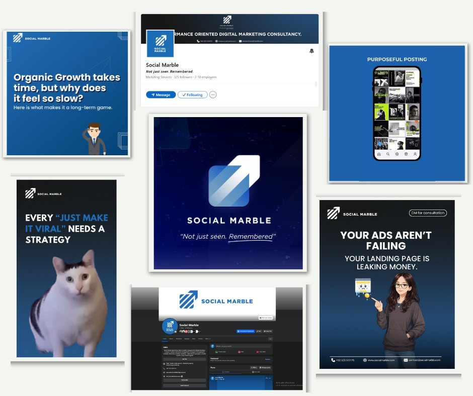
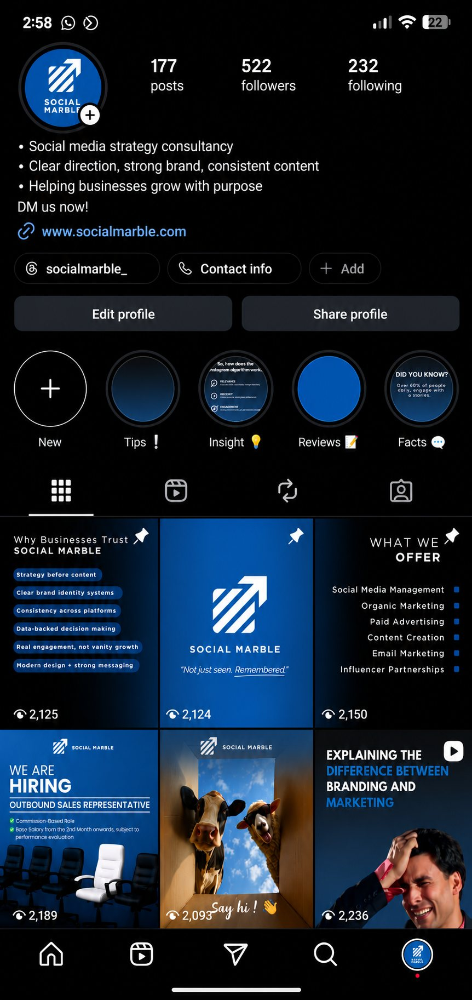

Social Marble
Social Media Strategy & Management

1. The Project
Social Marble was a digital marketing agency working with businesses on social media, content, websites, advertising, and organic marketing. I worked on the social media side of the agency, supporting client accounts through strategy, content planning, publishing, organic marketing, client communication, and day-to-day coordination. My work involved both managing ongoing social media activities and helping the agency grow through LinkedIn outreach. One of the key opportunities I brought in started through my personal LinkedIn profile, where I connected with a travel and tourism company and developed the conversation into a client project for the agency.
2. My role
My role went beyond content scheduling. I was involved in planning social media activities, communicating with clients, coordinating with the team, following up on deliverables, and making sure client requirements were properly understood and addressed. I also handled organic marketing and used LinkedIn for business development and outreach. This allowed me to work across both the marketing and client-management sides of the agency.
3. What I did
Social Media Strategy & Planning
I worked on social media planning based on each client’s requirements, including content direction, content calendars, scheduling, and maintaining consistency across platforms.
Content & Publishing
I managed content planning, scheduling, publishing, and day-to-day social media activities across Instagram, Facebook, LinkedIn, TikTok, YouTube, Pinterest, Threads, and X.
Organic Marketing
I worked on organic marketing and community management to maintain the brands’ presence and support ongoing engagement with their audiences.
Client & Team Coordination
I communicated with clients to understand their requirements, shared updates, followed up on work, and coordinated with team members to keep projects moving.
LinkedIn Outreach
I also used my personal LinkedIn profile to identify and reach out to potential clients. One of these conversations developed into a travel and tourism client project for Social Marble.
4. Outcome
One of the most valuable outcomes of this experience was being able to contribute beyond day-to-day social media management. Through LinkedIn outreach, I helped create a new business opportunity that developed into ongoing work for the agency. The experience also strengthened my ability to manage social media projects from planning and execution to client communication and team coordination.
5. Samples


Have a project in mind?
Tell me a little about what you’re working on and where you’re stuck.
Let’s work together